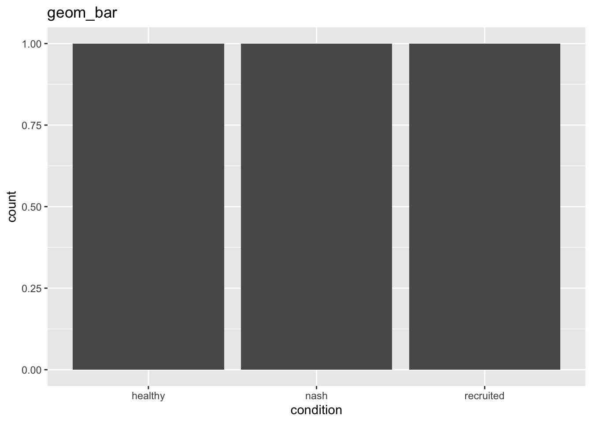
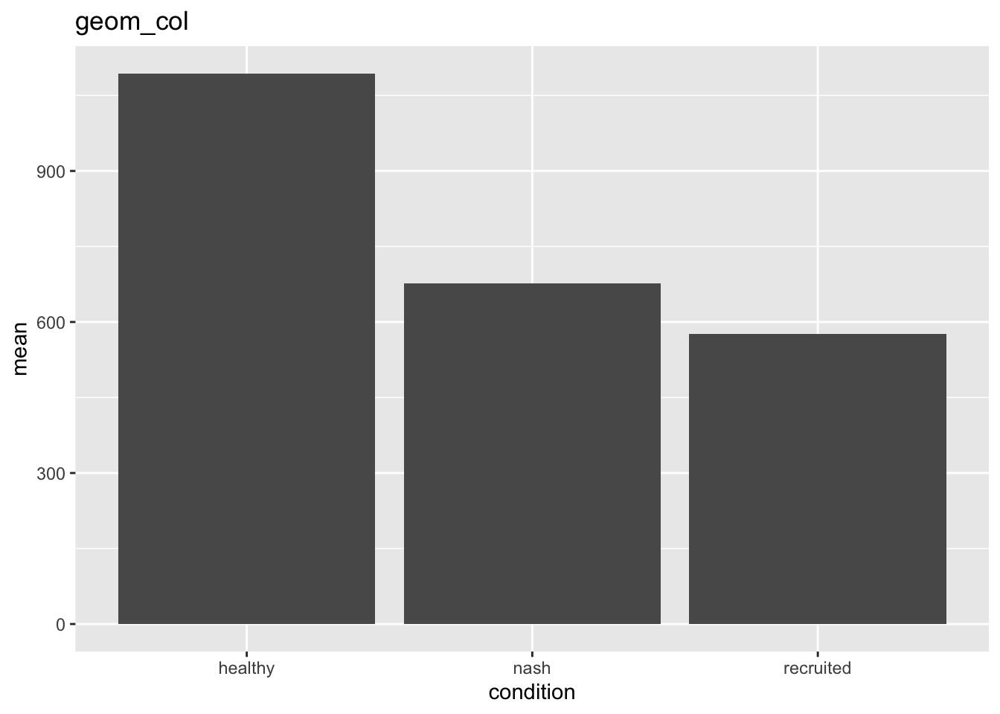
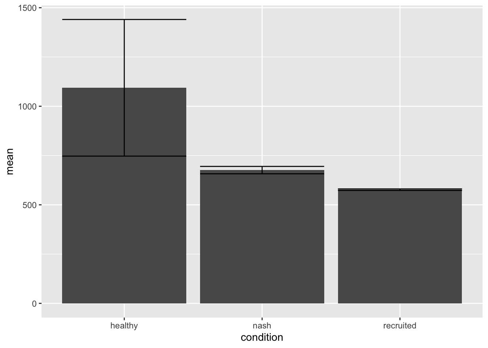
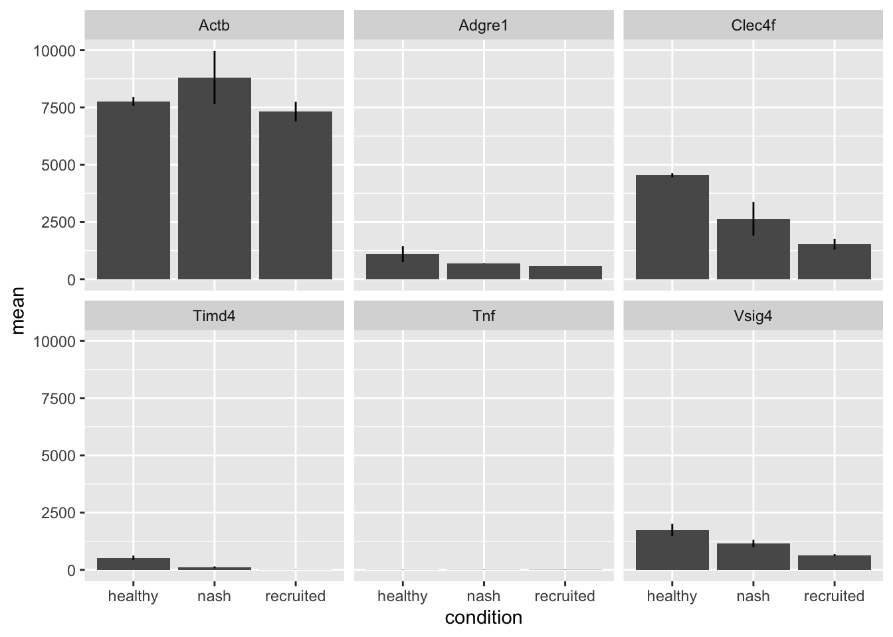
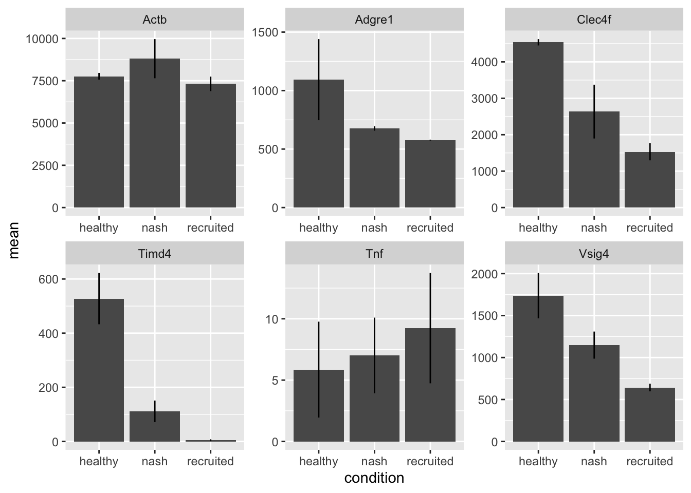
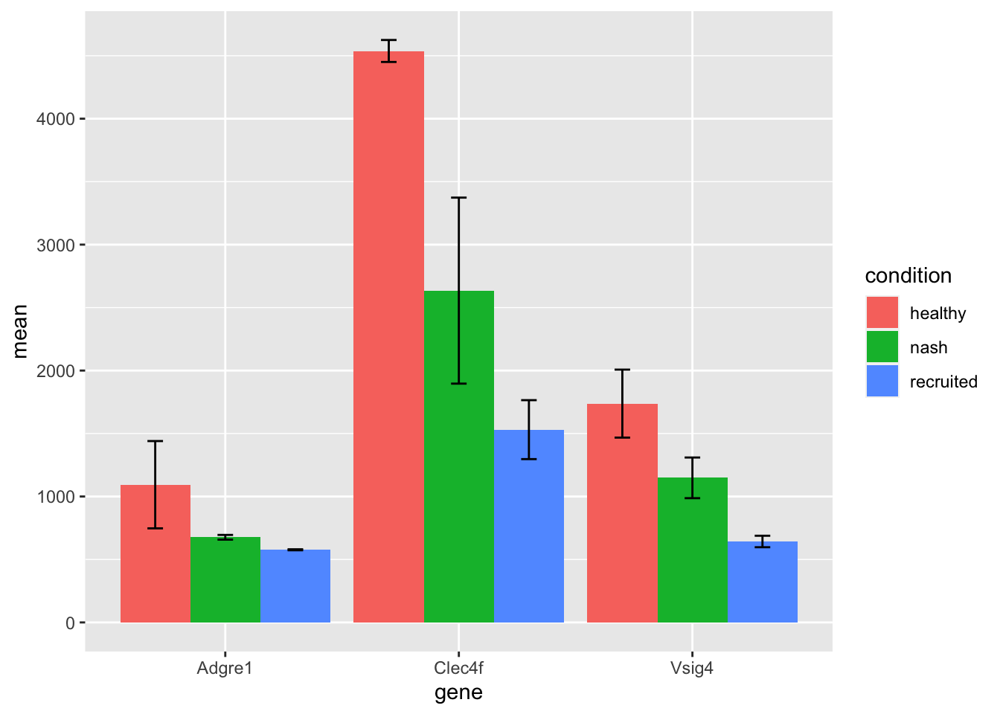
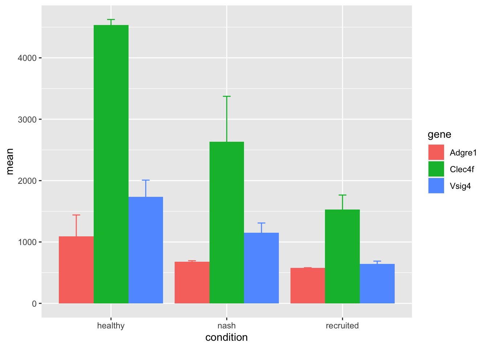
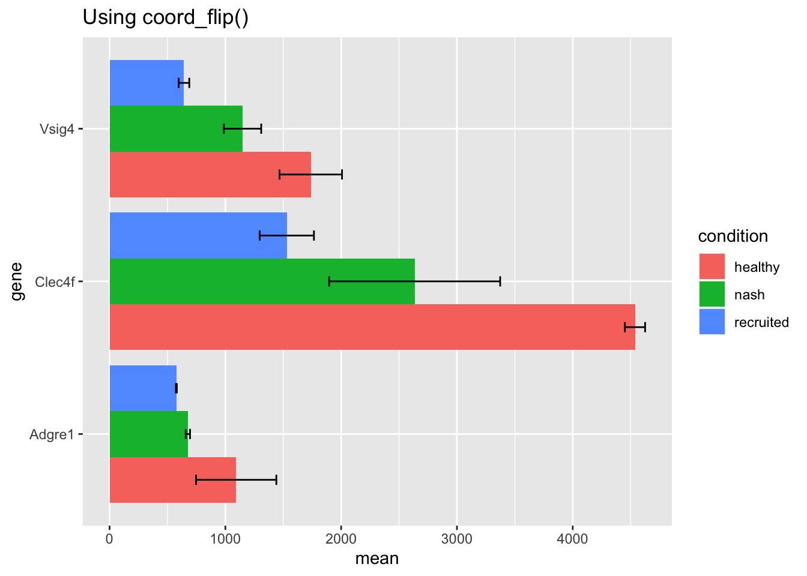
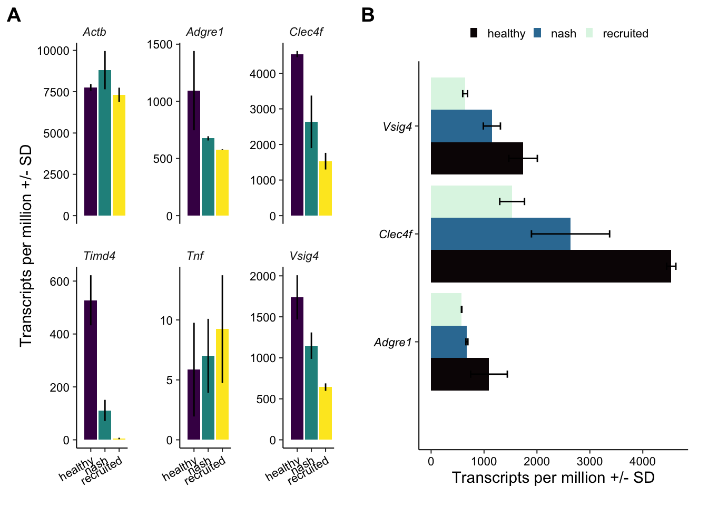

lapply(
X = c("cowplot", "dplyr", "ggplot2", "readr", "tidyr"),
FUN = library,
character.only = TRUE
)Making a bar chart using RNA-seq data
In this tutorial we will learn to make a bar chart using RNA-seq data from table S2 in Seidman et. al. Immunity. Volume 52, Issue 6, 16 June 2020, Pages 1057-1074.e7, which can be downloaded here. Once we have the data, we will need to open Rstudio and load the necessary packages. We can do that with library().
In the prior tutorial, we spent time learning how to read in data, and process it into a more friendly, or tidy, format. You can revisit that information here.
With the assumption that this information is fresh in our minds, lets read in a subset of this data. We will select the first 8 columns, and rename these columns to an easier to read format. We will also extract the gene name from column 2 and discard all text after the first occurrence of the ‘|’ symbol using ‘separate.’ We will then discard rows containing the same gene using ‘distinct.’ This occurs because the initial expression table was generated using without the -condenseGenes option using HOMER analyzeRepeats.pl.
# Note, when reading in your data, you should change the path to the
# location/name of your data
colnames(
readxl::read_xlsx(path = "../Data/Source/1-s2.0-S107476132030159X-mmc3.xlsx")
) %>% head(8)[1] "Transcript/RepeatID (cmd=analyzeRepeats.pl rna mm10 -count exons -tpm -dfile Table_S2_dfile.txt)"
[2] "Annotation/Divergence"
[3] "KCH_rep1_figure1,3,4"
[4] "KCH_rep2_figure1,3,4"
[5] "KCN_rep1_figure1,3,4"
[6] "KCN_rep2_figure1,3,4"
[7] "KN-RM_rep1_figure1,3,4"
[8] "KN-RM_rep2_figure1,3,4" tb1 <-
readxl::read_xlsx(path = "../Data/Source/1-s2.0-S107476132030159X-mmc3.xlsx") %>%
dplyr::select(1:8) %>%
dplyr::rename(
accession = 1,
gene = 2,
healthy_rep1 = 3,
healthy_rep2 = 4,
nash_rep1 = 5,
nash_rep2 = 6,
recruited_rep1 = 7,
recruited_rep2 = 8
) %>%
separate(col = 2, into = "gene",
sep = "\\|", # uses regular expression rules
remove = TRUE, extra = "drop") %>%
distinct(gene, .keep_all = TRUE)
tb1 %>% head() %>% knitr::kable() #knitr::kable can be used for displaying nicer tables| accession | gene | healthy_rep1 | healthy_rep2 | nash_rep1 | nash_rep2 | recruited_rep1 | recruited_rep2 |
|---|---|---|---|---|---|---|---|
| NM_001329047 | Mia2 | 43.600 | 36.309 | 29.644 | 26.789 | 31.999 | 38.089 |
| NM_172405 | Abraxas1 | 1.913 | 2.205 | 1.953 | 1.818 | 2.278 | 2.202 |
| NM_001359283 | Sec63 | 19.312 | 17.762 | 13.237 | 12.867 | 14.032 | 15.969 |
| NM_001168290 | Sugp2 | 11.500 | 8.864 | 10.921 | 7.571 | 12.740 | 9.618 |
| NM_001356498 | Mtmr12 | 7.145 | 8.743 | 6.711 | 6.839 | 7.881 | 7.009 |
| NM_001358950 | Cbx5 | 6.531 | 6.207 | 5.856 | 7.199 | 8.375 | 8.728 |
Making plots with ggplot2 requires data to be in a particular format. Each column is a variable, each row should is an observation, and each cell is a single value. Having data in this ‘tidy’ format is a common goal within the tidyverse. For example:
tibble(
geneName = c("geneA", "geneA", "geneB", "geneB"),
condition = c("untreated", "treated", "untreated", "treated"),
expression = c(21, 23, 103, 109)
) %>% knitr::kable()| geneName | condition | expression |
|---|---|---|
| geneA | untreated | 21 |
| geneA | treated | 23 |
| geneB | untreated | 103 |
| geneB | treated | 109 |
For the purpose of a ggplot2 barplot, we can use dplyr::summarize to calculate the associated statistics. In this case, we don’t want to transform our data or pre-calculate the mean. But we do need to shift the data into the ‘longer’ format as above. We can accomplish this using tidyr::pivot_longer. In this case, first define which columns should be pivoted using cols, then define the variable name assigned to the values column with values_to. Variable names for each condition and replicate are generated by splitting on the ‘_’ character integrated with the rename function when reading in the data. This is done with names_to and names_sep.
tb1 %>%
pivot_longer(
cols = -(1:2), # by using a `-`, we can exclude the first two columns
values_to = c("tpm"),
names_to = c("condition", "replicate"),
names_sep = "_"
) %>% head() %>% knitr::kable()| accession | gene | condition | replicate | tpm |
|---|---|---|---|---|
| NM_001329047 | Mia2 | healthy | rep1 | 43.600 |
| NM_001329047 | Mia2 | healthy | rep2 | 36.309 |
| NM_001329047 | Mia2 | nash | rep1 | 29.644 |
| NM_001329047 | Mia2 | nash | rep2 | 26.789 |
| NM_001329047 | Mia2 | recruited | rep1 | 31.999 |
| NM_001329047 | Mia2 | recruited | rep2 | 38.089 |
With the data in this longer format, we can now use a combination of dplyr::group_by and dplyr::summarise to calculate the plotting variable we desire for each gene:condition.
summary1 <-
tb1 %>%
pivot_longer(
cols = -(1:2),
values_to = c("tpm"),
names_to = c("condition", "replicate"),
names_sep = "_"
) %>%
group_by(gene, condition) %>%
summarise(n = n(),
mean = mean(tpm),
sd = sd(tpm))`summarise()` has grouped output by 'gene'. You can override using the
`.groups` argument.summary1 %>% head() %>% knitr::kable()| gene | condition | n | mean | sd |
|---|---|---|---|---|
| 0 | healthy | 2 | 0.9915 | 1.4021927 |
| 0 | nash | 2 | 2.5565 | 3.6154370 |
| 0 | recruited | 2 | 3.9465 | 0.1053589 |
| 0610005C13Rik | healthy | 2 | 2.3495 | 0.7700393 |
| 0610005C13Rik | nash | 2 | 1.1445 | 0.5536646 |
| 0610005C13Rik | recruited | 2 | 1.1375 | 0.6682159 |
Now the data is in a suitable tidy format. Ggplot has two options for making bar charts: geom_bar and geom_col. Read more at the link above. Essentially, use geom_bar() if the desired plot should be proportional to the number of times an observation occurs, and use geom_col() if the plot should be proportional to the values in the data.
summary1 %>%
filter(gene == "Adgre1") %>%
ggplot(aes(x = condition)) +
geom_bar() +
ggtitle("geom_bar")
summary1 %>%
filter(gene == "Adgre1") %>%
ggplot(aes(x = condition, y = mean)) +
geom_col(position = position_dodge()) +
ggtitle("geom_col")

We can also add an error bar to the geom_col() using geom_errorbar() or geom_linerange(). Layering the error interval onto the bar charts requires defining aesthetic mappings with aes().
summary1 %>%
filter(gene == "Adgre1") %>%
ggplot(aes(x = condition, y = mean)) +
geom_col() +
geom_errorbar(aes(
x = condition,
ymin = mean - sd,
ymax = mean + sd
))
summary1 %>%
filter(gene == "Adgre1") %>%
ggplot(aes(x = condition, y = mean)) +
geom_col() +
geom_linerange(aes(
x = condition,
ymin = mean - sd,
ymax = mean + sd
))
Often it will be desired to create a panel of bar charts for several genes of interest. This is quite easy to accomplish with ggplot by adding facet_wrap or facet_grid to the ggplot object. In this case, we will also need to retain a few more example genes. These can be added to the filter function directly, or a character vector can be created and intersected within the filter step.
goi <- c("Adgre1", "Vsig4", "Clec4f", "Actb", "Timd4", "Tnf")
summary1 %>%
filter(gene %in% goi) %>%
ggplot(aes(x = condition, y = mean)) +
geom_col() +
geom_linerange(aes(
x = condition,
ymin = mean - sd,
ymax = mean + sd
)) +
facet_wrap( ~ gene)
In this case, the scales are automatically shared and reflect the range of the supplied data. In this case the scales misrepresent the expression data for genes not expressed at a similar magnitude as beta actin. This can be adjusted by adjusting the ‘scales’ option to ‘free_y’ or ‘free.’
goi <- c("Adgre1", "Vsig4", "Clec4f", "Actb", "Timd4", "Tnf")
summary1 %>%
filter(gene %in% goi) %>%
ggplot(aes(x = condition, y = mean)) +
geom_col() +
geom_linerange(aes(
x = condition,
ymin = mean - sd,
ymax = mean + sd
)) +
facet_wrap( ~ gene, scales = 'free')
We can also create bar charts for several genes within one panel by assigning a color or fill parameter in the mapping aesthetics. The data is grouped first by the x/y mapping and then by the fill/color mapping.
goi <- c("Adgre1", "Vsig4", "Clec4f")
summary1 %>%
filter(gene %in% goi) %>%
ggplot(aes(x = gene, y = mean, fill = condition)) +
geom_bar(position = position_dodge(width = 0.9), stat = "identity") +
geom_errorbar(
aes(
x = gene,
ymin = mean - sd,
ymax = mean + sd,
),
width = 0.2,
position = position_dodge(width = 0.9),
stat = "identity"
)
summary1 %>%
filter(gene %in% goi) %>%
ggplot(aes(x = condition, y = mean, fill = gene)) +
geom_bar(position = position_dodge(width = 0.9), stat = "identity") +
geom_errorbar(
aes(
x = condition,
ymin = mean - sd,
ymax = mean + sd,
colour = gene
),
width = 0.2,
position = position_dodge(width = 0.9),
stat = "identity"
)

We can also easily generate sideways barcharts changing mapping to x or y. In this case the error interval mapping must be appropriately altere. As an alterntaive, the chart can be flipped using coord_flip().
goi <- c("Adgre1", "Vsig4", "Clec4f")
summary1 %>%
filter(gene %in% goi) %>%
ggplot(aes(x = mean, y = gene, fill = condition)) +
geom_bar(position = position_dodge(width = 0.9), stat = "identity") +
geom_errorbar(
aes(
y = gene,
xmin = mean - sd,
xmax = mean + sd,
),
width = 0.2,
position = position_dodge(width = 0.9),
stat = "identity"
) +
ggtitle("Using adjusted ggplot(aes()) and geom_errorbar(aes())")
summary1 %>%
filter(gene %in% goi) %>%
ggplot(aes(x = gene, y = mean, fill = condition)) +
geom_bar(position = position_dodge(width = 0.9), stat = "identity") +
geom_errorbar(
aes(
x = gene,
ymin = mean - sd,
ymax = mean + sd
),
width = 0.2,
position = position_dodge(width = 0.9),
stat = "identity"
) +
coord_flip() +
ggtitle("Using coord_flip()")

A publication quality bar chart can be rendered by adjusting parameters to your specifications. Panels can be assembled and easily aligned using the cowplot and/or the ggpubr packages.
library(cowplot)
goi <- c("Adgre1", "Vsig4", "Clec4f", "Actb", "Timd4", "Tnf")
pointSize <- 14
lineWidth <- 1 / 2.835
a <-
summary1 %>%
filter(gene %in% goi) %>%
ggplot(aes(x = condition, y = mean, fill = condition)) +
geom_col() +
geom_linerange(aes(
x = condition,
ymin = mean - sd,
ymax = mean + sd
)) +
expand_limits(x = 0, y = 0) +
theme(panel.spacing = unit(1, "lines")) +
labs(x = NULL, y = c("Transcripts per million +/- SD")) +
theme(
text = element_text(size = pointSize, colour = "black"),
rect = element_blank(),
line = element_line(size = lineWidth, colour = "black"),
plot.title = element_text(size = pointSize * 0.8, colour = "black"),
axis.title = element_text(size = pointSize * 0.8, colour = "black"),
axis.text.x = element_text(
size = pointSize * 0.6,
colour = "black",
angle = 30,
hjust = 1
),
axis.text.y = element_text(size = pointSize * 0.6, colour = "black"),
legend.position = "none",
panel.grid.major = element_blank(),
panel.grid.minor = element_blank(),
legend.title = element_blank(),
legend.text = element_text(size = pointSize * 0.6, colour = "black"),
legend.key.height = unit(0.1, "cm"),
legend.key.width = unit(0.2, "cm"),
axis.line = element_line(size = lineWidth, colour = "black"),
plot.margin = unit(c(0.5, 0.5, 0.5, 0.5), "cm"),
strip.text = element_text(
face = "italic",
size = pointSize * 0.6,
hjust = 0
),
strip.placement = "outside"
) +
scale_fill_viridis_d(option = "viridis") +
facet_wrap(~ gene, scales = 'free_y')
b <-
summary1 %>%
filter(gene %in% c("Adgre1", "Vsig4", "Clec4f")) %>%
ggplot(aes(x = gene, y = mean, fill = condition)) +
geom_bar(position = position_dodge(width = 0.9), stat = "identity") +
geom_errorbar(
aes(
x = gene,
ymin = mean - sd,
ymax = mean + sd
),
width = 0.2,
position = position_dodge(width = 0.9),
stat = "identity"
) +
expand_limits(x = 0, y = 0) +
theme(panel.spacing = unit(1, "lines")) +
labs(x = NULL, y = c("Transcripts per million +/- SD"),) +
theme(
text = element_text(size = pointSize, colour = "black"),
rect = element_blank(),
line = element_line(size = lineWidth, colour = "black"),
plot.title = element_text(size = pointSize * 0.8, colour = "black"),
axis.title = element_text(size = pointSize * 0.8, colour = "black"),
axis.text.x = element_text(size = pointSize * 0.6, colour = "black"),
axis.text.y = element_text(
size = pointSize * 0.6,
colour = "black",
hjust = 1,
face = "italic"
),
legend.position = "top",
panel.grid.major = element_blank(),
panel.grid.minor = element_blank(),
legend.title = element_blank(),
legend.text = element_text(size = pointSize * 0.6, colour = "black"),
legend.key.height = unit(0.1, "cm"),
legend.key.width = unit(0.2, "cm"),
axis.line = element_line(size = lineWidth, colour = "black"),
plot.margin = unit(c(0.5, 0.5, 0.5, 0.5), "cm"),
) +
scale_fill_viridis_d(option = "mako") +
coord_flip()
plot_grid(a,
b,
align = "v",
axis = "bt",
labels = c("A", "B"))
Finished!
sessioninfo::session_info(pkgs = NULL) %>% details::details(summary = 'Current session info', open = TRUE)Current session info
─ Session info ───────────────────────────────────────────────────────────────
setting value
version R version 4.1.0 (2021-05-18)
os macOS Big Sur 10.16
system x86_64, darwin17.0
ui X11
language (EN)
collate en_US.UTF-8
ctype en_US.UTF-8
tz America/New_York
date 2022-05-04
pandoc 2.17.1.1 @ /Applications/RStudio.app/Contents/MacOS/quarto/bin/ (via rmarkdown)
─ Packages ───────────────────────────────────────────────────────────────────
package * version date (UTC) lib source
assertthat 0.2.1 2019-03-21 [2] CRAN (R 4.1.0)
cellranger 1.1.0 2016-07-27 [2] CRAN (R 4.1.0)
cli 3.1.1 2022-01-20 [1] CRAN (R 4.1.2)
clipr 0.7.1 2020-10-08 [2] CRAN (R 4.1.0)
colorspace 2.0-2 2021-06-24 [2] CRAN (R 4.1.0)
cowplot * 1.1.1 2020-12-30 [2] CRAN (R 4.1.0)
crayon 1.4.2 2021-10-29 [2] CRAN (R 4.1.0)
DBI 1.1.2 2021-12-20 [2] CRAN (R 4.1.0)
desc 1.4.0 2021-09-28 [1] CRAN (R 4.1.0)
details 0.2.1 2020-01-12 [2] CRAN (R 4.1.0)
digest 0.6.29 2021-12-01 [2] CRAN (R 4.1.0)
dplyr * 1.0.8 2022-02-08 [2] CRAN (R 4.1.0)
ellipsis 0.3.2 2021-04-29 [2] CRAN (R 4.1.0)
evaluate 0.14 2019-05-28 [2] CRAN (R 4.1.0)
fansi 1.0.2 2022-01-14 [2] CRAN (R 4.1.2)
farver 2.1.0 2021-02-28 [2] CRAN (R 4.1.0)
fastmap 1.1.0 2021-01-25 [1] CRAN (R 4.1.0)
generics 0.1.2 2022-01-31 [2] CRAN (R 4.1.2)
ggplot2 * 3.3.5 2021-06-25 [2] CRAN (R 4.1.0)
glue 1.6.1 2022-01-22 [2] CRAN (R 4.1.2)
gtable 0.3.0 2019-03-25 [2] CRAN (R 4.1.0)
highr 0.9 2021-04-16 [2] CRAN (R 4.1.0)
hms 1.1.1 2021-09-26 [2] CRAN (R 4.1.0)
htmltools 0.5.2 2021-08-25 [2] CRAN (R 4.1.0)
htmlwidgets 1.5.4 2021-09-08 [1] CRAN (R 4.1.0)
httr 1.4.2 2020-07-20 [2] CRAN (R 4.1.0)
jsonlite 1.7.3 2022-01-17 [2] CRAN (R 4.1.2)
knitr 1.37 2021-12-16 [2] CRAN (R 4.1.0)
labeling 0.4.2 2020-10-20 [2] CRAN (R 4.1.0)
lifecycle 1.0.1 2021-09-24 [2] CRAN (R 4.1.0)
magrittr 2.0.2 2022-01-26 [2] CRAN (R 4.1.2)
munsell 0.5.0 2018-06-12 [2] CRAN (R 4.1.0)
pillar 1.7.0 2022-02-01 [2] CRAN (R 4.1.2)
pkgconfig 2.0.3 2019-09-22 [2] CRAN (R 4.1.0)
png 0.1-7 2013-12-03 [2] CRAN (R 4.1.0)
purrr 0.3.4 2020-04-17 [2] CRAN (R 4.1.0)
R6 2.5.1 2021-08-19 [2] CRAN (R 4.1.0)
Rcpp 1.0.8 2022-01-13 [2] CRAN (R 4.1.2)
readr * 2.1.2 2022-01-30 [1] CRAN (R 4.1.2)
readxl 1.3.1 2019-03-13 [2] CRAN (R 4.1.0)
rlang 1.0.1 2022-02-03 [2] CRAN (R 4.1.2)
rmarkdown 2.11 2021-09-14 [1] CRAN (R 4.1.0)
rprojroot 2.0.2 2020-11-15 [1] CRAN (R 4.1.0)
rstudioapi 0.13 2020-11-12 [2] CRAN (R 4.1.0)
scales 1.1.1 2020-05-11 [2] CRAN (R 4.1.0)
sessioninfo 1.2.2 2021-12-06 [1] CRAN (R 4.1.0)
stringi 1.7.6 2021-11-29 [2] CRAN (R 4.1.0)
stringr 1.4.0 2019-02-10 [2] CRAN (R 4.1.0)
tibble 3.1.6 2021-11-07 [2] CRAN (R 4.1.0)
tidyr * 1.2.0 2022-02-01 [2] CRAN (R 4.1.2)
tidyselect 1.1.1 2021-04-30 [2] CRAN (R 4.1.0)
tzdb 0.2.0 2021-10-27 [2] CRAN (R 4.1.0)
utf8 1.2.2 2021-07-24 [2] CRAN (R 4.1.0)
vctrs 0.3.8 2021-04-29 [2] CRAN (R 4.1.0)
viridisLite 0.4.0 2021-04-13 [2] CRAN (R 4.1.0)
withr 2.4.3 2021-11-30 [1] CRAN (R 4.1.0)
xfun 0.29 2021-12-14 [1] CRAN (R 4.1.0)
xml2 1.3.3 2021-11-30 [2] CRAN (R 4.1.0)
yaml 2.2.2 2022-01-25 [2] CRAN (R 4.1.2)
[1] /Users/tro3nr/Library/R/x86_64/4.1/library
[2] /Library/Frameworks/R.framework/Versions/4.1/Resources/library
──────────────────────────────────────────────────────────────────────────────